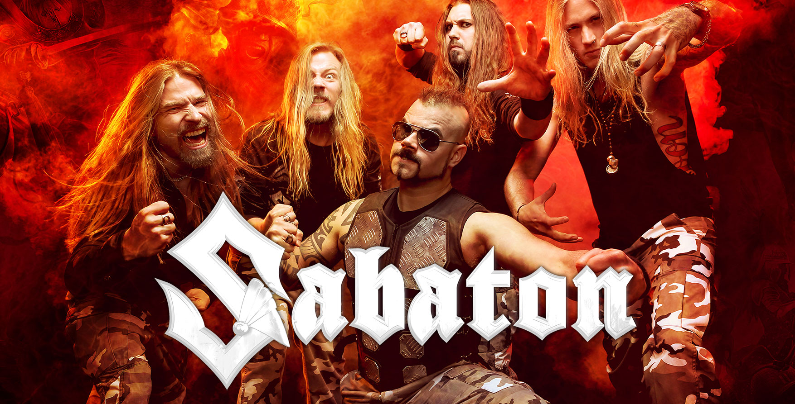

About Sabaton
In over two decades since their launch, Swedish metallers Sabaton have carved out a reputation as one of the
hardest working bands in the business – gaining a legion of loyal fans across the globe,
delivering ten
highly-rated studio albums (including two certified platinum-sellers), and scoring multiple industry award
wins and nominations… not to mention launching their own annual festival and cruise.
Combining soaring power riffs with vocalist Joakim Brodén’s instantly-recognisable gruff baritone, the band
refuses to be simply slotted into a genre. Fans need only know them as Sabaton: the heavy
metal band that
sings of real life wars and the people who played a part in them – of gruelling campaigns and dazzling acts
of bravery, of magnificent victories and touching personal struggles – true stories more fantastic than any
fiction.
Albums (and some songs from said albums)
- Primo Victoria
- Attero Dominatus
- Metalizer
- The Art of War
Coat of Arms
Carolus Rex
A Lifetime of War
Heroes
The Last Stand
The Attack of the Dead Men
Bismarck
Christmas Truce
Stories From the Western Front
Fields of Verdun